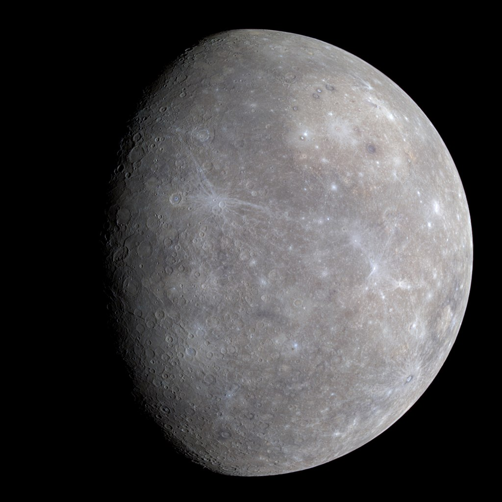

Merkür, Güneş Sistemimizdeki en küçük gezegendir. Ay’dan sadece biraz daha büyüktür. Güneş’e en yakın gezegen olmasına rağmen en sıcak gezegen unvanı Venüs’e aittir.Bu küçük gezegen, Dünya’ya göre kendi etrafında daha yavaş döner. Bu yüzden bir gün Merkür’de daha uzun sürer.
Merkür Gezegeni(Kaynak:NASA) Merkür, Dünya ve Mars ile beraber en kayalık gezegenlerden biridir. Katı yüzeyi kraterler ile kaplıdır, atmosferi ve uydusu yoktur. Bu küçük gezegen, Dünya’ya göre kendi etrafında daha yavaş döner. Bu yüzden bir gün Merkür’de daha uzun sürer. Merkür’ün bir günü Dünya’nın yaklaşık 59 gününe eşittir. Fakat bunun yanında Güneş’e en yakın gezegen olmasından dolayı (gitmesi gereken mesafe daha kısadır) bir yıl Merkür’de 88 Dünya gününe eşittir. Merkür’ün yavaş dönüşü ve kısa yıl süresinden dolayı Merkür’de bir gün Dünya’dan çok farklıdır. Güneş’in doğması ve batması uzun süre alır. Bu yüzden Merkür’de 180 Dünya gününde bir Güneş’in doğuşunu görebilirsiniz.
Merkür'ün hafif gri olduğunu görebilirsiniz (Kaynak:NASA)
NASA'nın MESSENGER uzay aracından Merkür'ün kuzey ufuğu
Fotoğrafın altına doğru yıldız şekline benzeyen kraterin ismi "Debussy" (Kaynak:NASA) Kaynak: NASA
Merkuri və ya Ütarid — Günəş sistemində yerləşən ən kiçik və Günəşə ən yaxın olan planet. Yer qrupu planetlərə aid olan Merkuri Günəş ətrafında ən sürətlə dövr edən planetdir və 88 günə tam bir dəfə dövr edir. Buna baxmayaraq Merkuri öz oxu ətrafında çox yavaş hərəkət edir. 1 Merkuri günü Yerdə keçən 116 günə bərabərdir. Merkuri planetinin təbii peyki yoxdur. Planetin adı Roma mifologiyasında gəlir, ticarət və xəbər tanrısı hesab olunan Merkuridən qaynaqlanır.